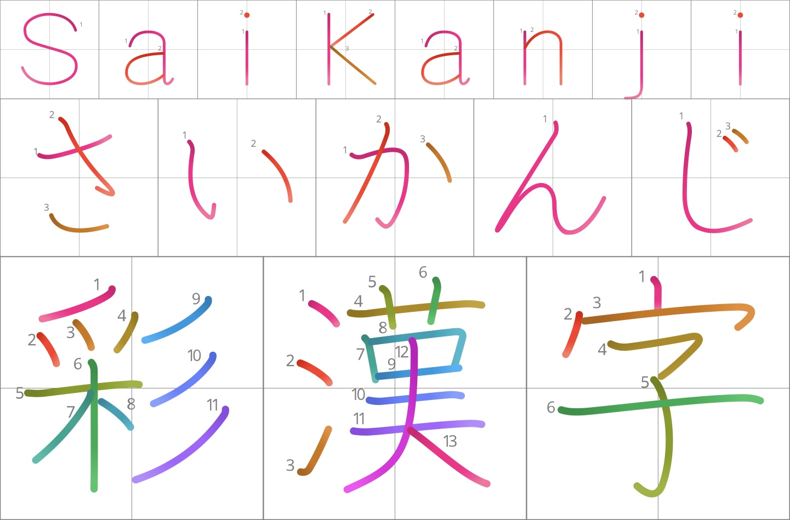

Why
Stroke order without extra tooling.
Most kanji fonts are monochrome, and most stroke-order tools require images, plugins, or custom rendering. SaiKanji packages stroke color, numbers, and optional grids directly into font files.

SaiKanji turns KanjiVG stroke data into a modern hybrid OpenType font with per-stroke color, stroke-order numbers, optional guide grids, and broad app/browser compatibility.
Live Demo
Edit the text, then combine palette, fill, light, and grid options. Fonts are served from the same site so the demo works on the custom domain and from a local folder.
Why
Most kanji fonts are monochrome, and most stroke-order tools require images, plugins, or custom rendering. SaiKanji packages stroke color, numbers, and optional grids directly into font files.
Formats
Release fonts combine OpenType SVG with COLR/CPAL or monochrome TrueType outlines. This lets different apps choose the color technology they support best.
Variants
SaiKanji includes Regular, Light, Balanced, Contrast, and Spectrum families, with light variants where useful. Color styles ship in Gradient and Solid fills; black Regular styles provide the simplest monochrome fallback.
License
SaiKanji is licensed under CC BY-SA 4.0 and is based on KanjiVG data by Ulrich Apel, released under CC BY-SA 3.0.
Download
Install TTF files for desktop use, or use WOFF2 files
with @font-face on the web. The current
release is v0.010, and the demo uses the WOFF2 files in
the fonts/ folder.